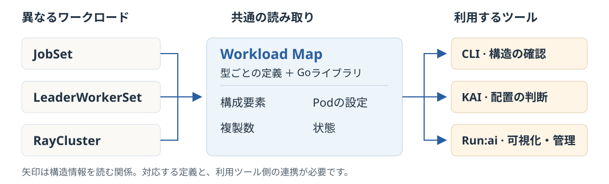

入力
実際のワークロード
型によって異なる設定と状態。
01 / 08 — NVIDIA WORKLOAD MAP
異なるAIの構成を、運用ツールが同じ観点で読めるようにする。
NVIDIA Workload Mapは、そのための共通定義を扱うOSSです。
ONE-PAGE BRIEF — 構造の読み方を再利用する

ワークロード
型ごとに異なる構成
Workload Map
構成要素・Pod設定・複製数・状態
連携するツール
CLI / KAI Scheduler / Run:ai
ニュース原典：NVIDIA公式記事（11月2日）公式README
11月2日は解説記事の日付です。プロジェクトの初公開日を示すものではありません。見出しの問題提起は本資料の考察です。
公式資料から：AI基盤が複雑になる理由
分散学習や複数ノードの推論では、複数のPodをまとめて扱います。何を、何個動かし、どの状態を正常とするかを読む必要があります。
Kubernetes：コンテナ化したアプリを管理する基盤。
Pod：1つ以上のコンテナをまとめた、基本的な実行単位。
ワークロード：ここでは、実行したい処理とその構成。
図は役割の例で、すべてのAI構成がこの形という意味ではありません。
公式資料から：従来の個別対応
JobSet、LeaderWorkerSet、RayCluster。どれにも設定や状態がありますが、保存される場所や意味が違います。
個別実装の重複を示す概念図。LWSはLeaderWorkerSetの略。表の区分・件数は実測値ではありません。
新しい型が増えるたび、読み取り方の追加と保守が必要になる。
Workload Mapが減らそうとしているのは、この構造を解釈する処理の重複です。
公式仕様：型ごとの知識を定義として持つ
入力
型によって異なる設定と状態。
Workload Map
型に合ったYAML定義を使って、構造を読み取る。
共通の見方
確認、可視化、制御などのツールが利用する。
定義はjq形式の式で、項目の位置や状態の対応関係を指定します。旧称はKartaで、定義リソースのkindは現在も Karta です。
公式記事の構成例：JobSet
JobSet / demo
記事の設定では、各Jobの並列数は1。
定義を通して構造を把握
12 GPUこの仕事が要求する合計
leaderとworkerの内訳も分かる
JobSetはJobの設定を配列で持ち、LeaderWorkerSetはleader／workerの専用項目を持ちます。定義を替えることで、異なる構造を共通の観点で読めます。
出典：NVIDIA公式記事のJobSet例JobSet定義LWS定義
数値は公式記事の設定例です。実使用率・費用・性能の測定結果ではなく、本資料でも実行していません。
公式仕様と限界：記述と判断の役割分担
Workload Map
設定・複製数・状態を取り出す。定義に基づく更新や、Podをまとめる指示も扱う。
KAI Scheduler
必要なPod群をまとめて受け入れるgang admissionと、実行先の決定を担う。
対応には定義と検証が必要。未知の型まで自動で正しく解釈するわけではありません。
APIは開発中。公式READMEはpre-1.0と明記。GPU費用や導入工数の削減幅は、本資料では検証していません。
出典：Adopters / KAI SchedulerTechnical GuideREADME / StatusNVIDIA公式記事
本資料の考察：Platform Engineeringの価値
Platform Engineeringは、開発チームが共通で使う基盤や運用を整える仕事。今回の考察は、新しい仕組みを追加しやすくする設計にも価値がある、ということです。
1 / 選ぶ
構成、数、状態など、複数のツールが必要とする情報をそろえる。
2 / 確かめる
正常・失敗・拡縮時に、数や状態を正しく読めるか確認する。
3 / 残す
優先順位、予算、配置方針を、構造の定義とは分けて決める。
評価の問い：新しいワークロードを追加するとき、どの処理を再利用でき、どこを検証し直す必要があるか。
このページは本資料の考察・運用提案です。効果を実測した主張ではありません。
背景となる仕様：Technical GuideAdopters
要点と一次出典
定義で構造を読む。
運用の判断は、ツールが担う。
公式説明では、Apache 2.0で提供され、NVIDIA Run:aiの本番環境で利用されています。特定環境での効果や互換性を保証する記述ではありません。
情報確認：2026年11月3日（JST）。参照commit：c9ea43f。
公式仕様と本資料の考察を区別しています。導入・実行・性能測定は行っていません。